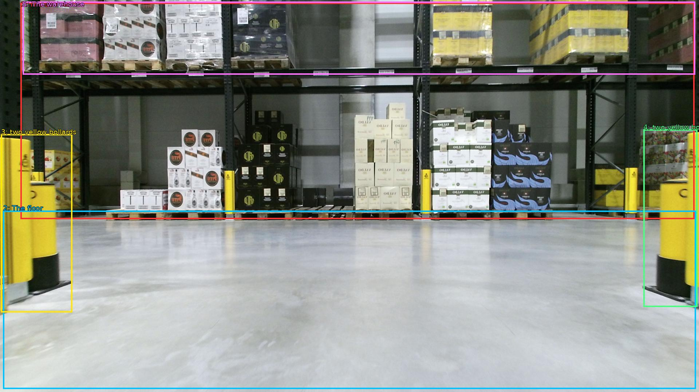

The image shows a large warehouse with multiple shelves filled with boxes and pallets. The shelves are arranged in a grid-like pattern and are filled with different types of boxes of different sizes and colors. The floor is made of concrete and there are two yellow bollards on either side of the shelves. The warehouse appears to be well-lit with natural light coming in from the windows in the background. The overall atmosphere of the image is industrial and organized.

Original · Caption raw · Grounding raw · Koordinate
Številke so lokalni ID regije. Dolge slikovne oznake so skrajšane; spodaj so celotne fraze. Napovedane regije se lahko prekrivajo ali opisujejo skupine.
| ID | Celotna fraza | bbox xyxy |
|---|---|---|
| 1 | The shelves | [56.63999938964844, 7.020000457763672, 1907.5198974609375, 603.1800537109375] |
| 2 | The floor | [8.639999389648438, 580.5, 1911.3599853515625, 1071.9000244140625] |
| 3 | two yellow bollards | [2.879999876022339, 369.9000244140625, 198.72000122070312, 860.2200317382812] |
| 4 | two yellow bollards | [1767.3599853515625, 356.94000244140625, 1915.199951171875, 845.1000366210938] |
| 5 | The warehouse | [62.39999771118164, 4.860000133514404, 1909.43994140625, 205.74000549316406] |